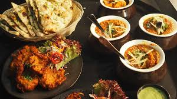
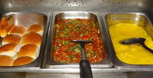

When it comes to wine, it’s worth describing it all: sight, scents, textures and flavors. Here are a few descriptions you can use:
1. The color - Wine has often more than one color. Mention the primary color and the secondary colors: Ruby red with purple hues, golden with green tones, and pale straw with hints of silver.
2. The wine’s concentration - Mention the depth of color in red wine: Deep, rich, concentrated, opaque.
3. The intensity of aromas - some wines are very expressive, and you should mention that. Intense, expressive, ‘fills the room with…’.
4. The fruit aromas - For reds, see if you can find: blackberries, raspberries, currants, cranberries or blueberries. For whites, use: apples, pears, limes, lemons, grapefruit, guava, lychee or mango.
For food, it’s best to describe the central element in the dish and then mention the sauces and sides.
1. Mention the cooking method - Steamed, char-grilled, pan-fried, stir-fried, or slow-cooked.
2. Soft textures - smooth, silky, unctuous, coating, tender, and juicy.
3. Other textures - charred, crispy, firm, crunchy, and ‘al dente.’
4. What makes a dish unique - mention if this is a ‘house special,’ a ‘best seller’ or a ‘family recipe’.
 